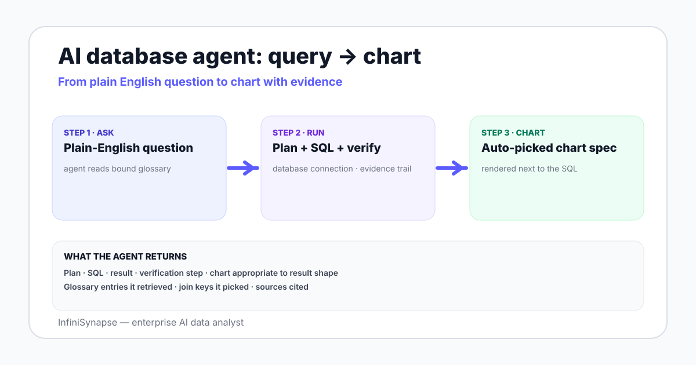

The category name is doing a lot of work. Break it into three parts. First, AI database agent: a system that plans its own steps, calls tools (one of which is your SQL engine), and verifies its own output — not just a model that emits SQL on demand. The structural definition lines up with the Anthropic working definition of an agent: a system that dynamically directs its own processes and tool usage.
Second, for data visualization: the output is not just a number or a SQL string. The agent emits a chart specification, and a renderer turns that specification into a chart in the user's browser. The chart and the written answer come back together.
Third, the implicit comparison: this is not a chart-from-CSV upload tool, and not a natural-language layer bolted onto a BI semantic model. It is a database-native pattern where the visualization step is part of the answer, not a follow-up action a human takes.
Every credible AI database visualization agent goes through five stages. The names vary; the structure does not.
The agent reads the question, retrieves business context (a knowledge base, glossary, or semantic model), inspects the schema of the connected database, and writes a short plan: which tables to read, which joins to make, which time grain to use, and which chart type to target. A reviewable plan is what separates an agent from a black-box text-to-SQL call.
The agent drafts the SQL for the chosen plan. On benchmarks like the BIRD text-to-SQL benchmark human engineers reach 92.96% execution accuracy. Agents close that gap not with a bigger model but by feeding the SQL stage richer context: schema snippets, sample rows, business-term mappings, and the structured plan from stage 1.
The SQL runs against the database, returns rows, and the agent verifies the shape of the result — column count, row count, null distribution — against what the plan expected. A mismatch triggers a re-plan, not a hidden retry.
The agent picks a chart type and emits a structured chart specification. This is the load-bearing stage. The spec is not free-form code; it is a typed object that names the chart, the axes, the data fields, the aggregation, and the color encoding. Two common targets are Vega-Lite and Apache ECharts.
The renderer validates the chart spec against its schema and draws the chart in the user's browser. Validation matters more than rendering speed: a Vega-Lite renderer that rejects an invalid spec is a sanity check the agent gets for free. If the renderer fails, the answer falls back to a table — never a guess.

The chart-spec layer is where most vendors quietly diverge. Vega-Lite is a declarative grammar with a published JSON schema, so an invalid spec fails fast. ECharts is more flexible, which means the model can invent fields the renderer silently ignores. Either format works if the renderer validates aggressively before rendering.
A minimal Vega-Lite spec for a time series looks like this:
{
"$schema": "https://vega.github.io/schema/vega-lite/v5.json",
"data": { "values": [{"week":"2026-W22","channel":"organic","revenue":42130}, ...] },
"mark": "line",
"encoding": {
"x": { "field": "week", "type": "temporal" },
"y": { "field": "revenue", "type": "quantitative" },
"color": { "field": "channel", "type": "nominal" }
}
}
The agent's job at stage 4 is to emit this object — not to write rendering code. The discipline of emitting a typed object is what keeps the agent from hallucinating chart features that do not exist.
The chart-type picker is a small but decisive component. Given a result shape, it picks one of seven defaults:
| Result shape | Default chart | Common mistake the picker avoids |
|---|---|---|
| One numeric column over a date column | Line chart | Bar chart for time series — hard to read for >10 points |
| One numeric column over one categorical column, <20 categories | Bar chart, horizontal if labels are long | Pie chart for >6 categories — unreadable |
| One numeric column over one categorical column, >20 categories | Table with sort, or top-N bar | A chart that crops important rows |
| One numeric column over two categorical columns | Grouped or stacked bar | Two side-by-side pies — almost never readable |
| Part-to-whole over time | Stacked bar or stacked area | Multiple pies, one per time bucket |
| Two numeric columns | Scatter plot, optional regression line | Bar chart of two unrelated axes |
| Mixed types, sparse, or fewer than 3 rows | Table | Forcing a chart on a result that does not have one |
The picker should default to a table whenever no chart is a clean fit. This single rule prevents the most common failure mode of agentic visualization: a confident-looking chart drawn on a result that should have been a list.
The five-stage pipeline is shared. Where vendors differ is what feeds stage 1 and stage 4 — the plan and the chart spec.
| Vendor | What feeds the plan | What emits the chart | Connects directly to a database? | Strong for |
|---|---|---|---|---|
| Tableau Pulse | Modeled metrics defined in Tableau, plus a digest layer that watches for change | Tableau's own viz engine, picked from a curated set of digest cards | Through Tableau data sources, not directly | Pre-modeled metric monitoring with subscription-style insights |
| Power BI Copilot | A semantic model in Power BI plus DAX measures | Native Power BI visuals selected by the assistant | Through the Power BI semantic model | Teams already invested in Power BI semantic modeling |
| ThoughtSpot Sage | A search-friendly worksheet sitting on top of the warehouse | The Spot IQ engine emits an Answer with a chart | Through ThoughtSpot's connection layer to the warehouse | Search-first analytics on a curated worksheet |
| InfiniSynapse | The database schema plus a bound knowledge base of business definitions | A typed chart spec rendered by the InfiniSynapse client; agent picks chart type as part of the plan | Yes — direct connections to PostgreSQL, MySQL, Snowflake, Supabase, S3, CSV | Open-ended, cross-source questions where the data was never modeled into a semantic layer |
None of these is a "best" choice in the abstract. The right pick depends on whether you already have a semantic model worth feeding (Tableau, Power BI), a curated worksheet (ThoughtSpot), or a set of databases you want to query without a modeling project in front of every new question (InfiniSynapse). The companion guide on AI-native vs augmented analytics walks through the architectural split in more detail.
Here is the same question — "show me weekly revenue by channel for the last 8 weeks" — followed through the five stages, with realistic intermediate output. The database is a PostgreSQL instance with one fact table.
The agent retrieves the definition of "channel" from a bound knowledge base (organic, paid_search, social, email, referral, direct) and the definition of revenue (sum of order_total from orders where status = 'paid'). It picks a weekly grain because the user said "weekly" and a line chart because the shape is one numeric column over time, multi-series.
SELECT
date_trunc('week', paid_at)::date AS week,
channel,
SUM(order_total) AS revenue
FROM orders
WHERE status = 'paid'
AND paid_at >= now() - interval '8 weeks'
GROUP BY 1, 2
ORDER BY 1, 2;
The query returns 48 rows (8 weeks × 6 channels), shape verified. No nulls in revenue. The agent compares totals against the previous run from cache and flags a 6% variance on paid_search — within the normal range.
The agent emits a Vega-Lite line chart spec with week on the x-axis (temporal), revenue on the y-axis (quantitative), and channel encoded as color (nominal). It adds a tooltip showing exact weekly revenue per channel and a deterministic color order so the same channel keeps the same color across runs.
The renderer validates the spec, draws the chart, and returns it inline with a one-paragraph interpretation: "Organic and paid search are the top two channels; social grew 18% week-over-week off a low base; email is flat. The SQL, the rows, and the source rows are below." A reviewer can click each piece and audit it.
A confident-looking misleading chart is worse than no chart. Three guardrails do most of the work.
The NIST AI Risk Management Framework gives your security and analytics reviewers a shared structure for grading these guardrails. The companion guide on explainable AI data analysis walks through what the evidence trail of a single agent answer should contain.
A chart is the friendliest possible interface to a misleading number. Guardrails belong on the picker, not on the prompt.
An AI database agent for data visualization does not replace dashboards. Most teams run both: a dashboard for the known metric on Monday morning and the agent for the unmodeled question that arrived at noon. The guide on PostgreSQL data analysis tools maps the five tool categories — CLI, perf extensions, BI, dbt, AI agents — and where each one fits.
For Postgres-specific patterns and the database-knowledge-base binding model, see PostgreSQL data analysis with AI. For the pillar overview of the AI database query category, see AI database query: the pillar guide. For the broader definition of an agent in this context, see what is a data agent.
Connect a database read-only, seed a small knowledge base, and ask one cross-source question. Review the plan, the SQL, the verified rows, the chart spec, and the rendered chart side by side before deciding whether this category belongs in your stack.
Try InfiniSynapse onlineLast updated: 2026-06-28 · Next scheduled review: 2026-09-28
The pipeline and chart-type picker rules on this page are grounded in published vendor documentation (Vega-Lite, Apache ECharts, Tableau Pulse, Power BI Copilot, ThoughtSpot), the ReAct paper for tool-using agent structure, BIRD/Spider benchmarks for SQL accuracy, the NIST AI Risk Management Framework for guardrails, and InfiniSynapse product documentation for the bound-knowledge-base pattern. The worked example uses a synthetic dataset that mirrors a real e-commerce schema.
Conflict of interest: InfiniSynapse publishes this page and builds in this category. To reduce bias, the comparison table names other vendors fairly, the guardrails section applies to any vendor, and external sources are cited for every numeric claim.
Update cadence: Reviewed every 90 days for vendor changes, spec format shifts, and benchmark updates.